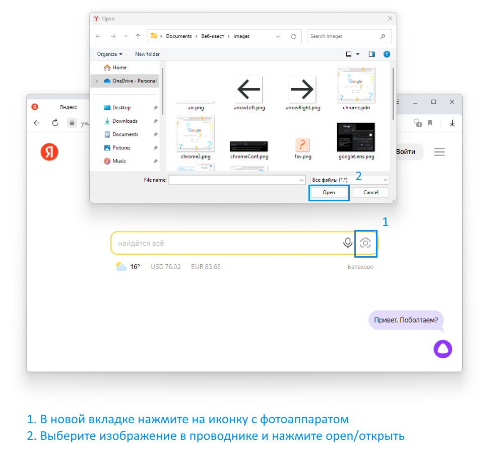
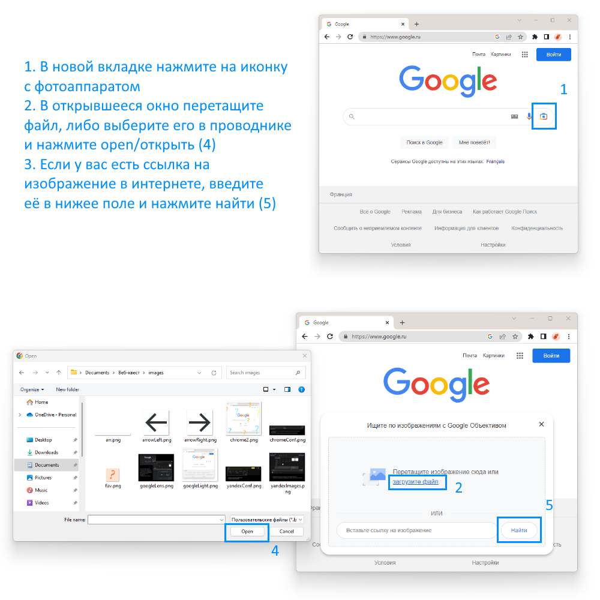
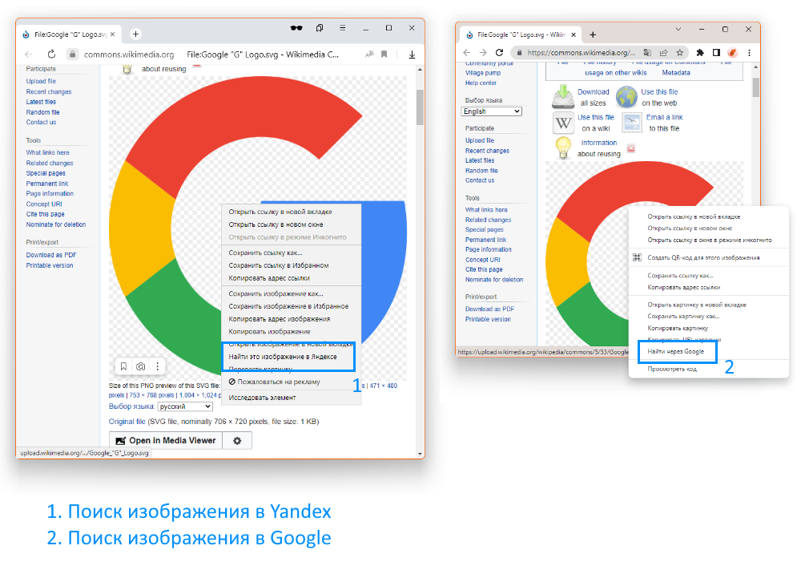
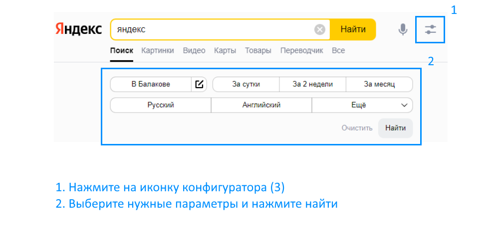
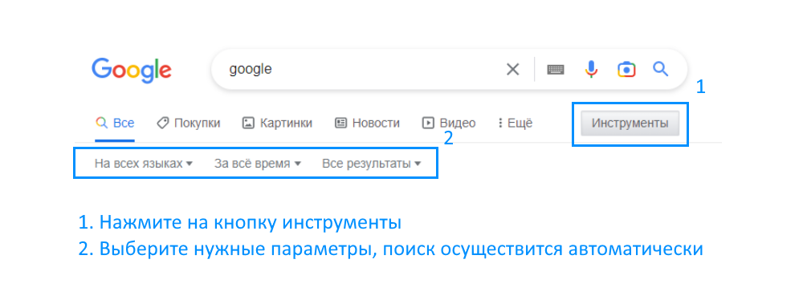
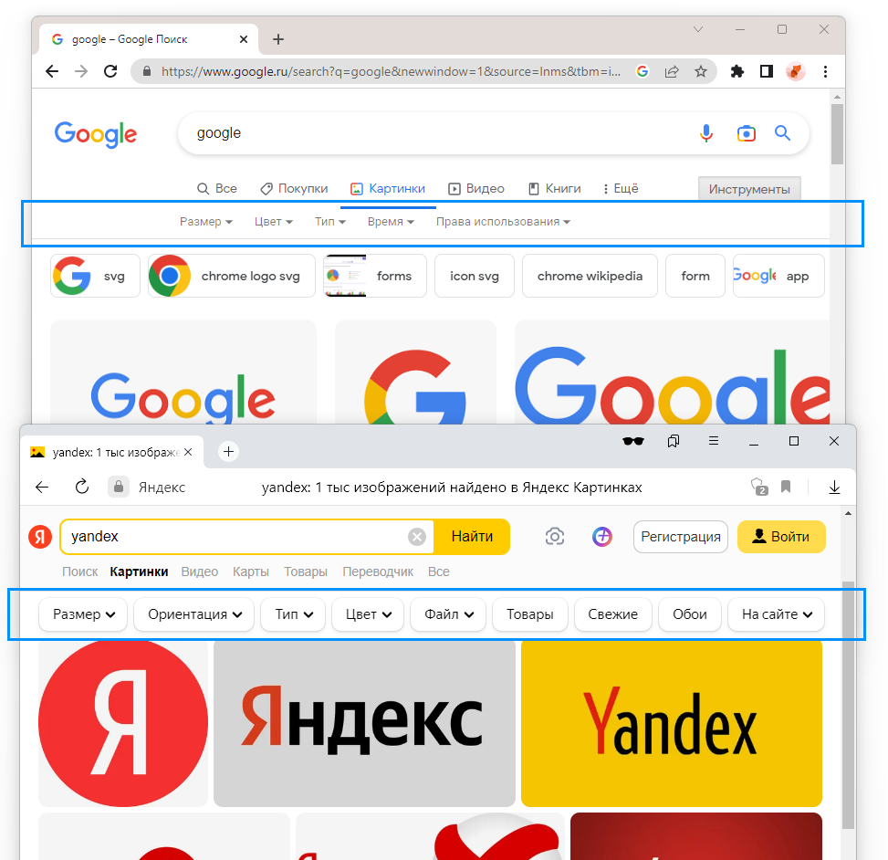
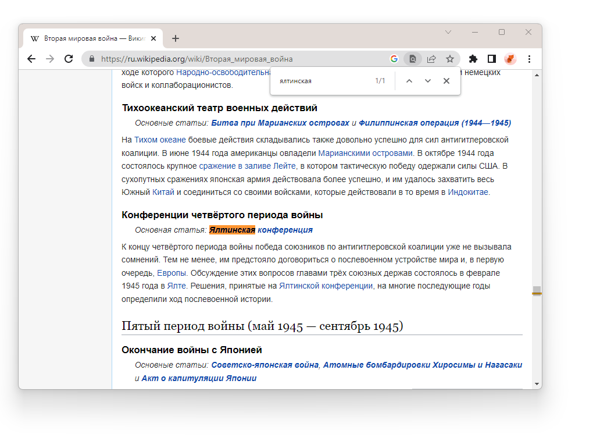

1. Правила формирования запроса
Чтобы эффективно работать с поисковыми системами, важно понимать правила формирования грамотного запроса. Вместо общих терминов сосредоточьтесь на конкретных словах или фразах, которые точно отражают то, что вы ищете. Например, если вы ищете информацию о пользе зеленого чая для здоровья, используйте такие ключевые слова, как "польза зеленого чая для здоровья", а не просто "зеленый чай".
Если вы ищете фильм, укажите имя режиссера или ведущего актера, чтобы сузить область поиска. Аналогично, если вы ищете рецепт, укажите конкретные ингредиенты или способ приготовления. Добавление релевантного контекста помогает поисковым системам лучше понять ваш запрос и выдавать более точные результаты.
Используйте кавычки для поиска точных фраз. Это гарантирует, что поисковая система будет искать именно эту конкретную фразу, а не отдельные слова. Например, если вы ищете текст песни, заключите название песни в кавычки, чтобы найти точное соответствие.
Помните, что ваш запрос должен быть кратким и ясным. Избегайте использования ненужных слов или фраз-заполнителей, которые не повышают ценность вашего поиска. Чтобы найти оптимальный запрос, проверьте различные комбинации ключевых слов и фраз.
Больше материала по теме ниже:
2. Поиск при помощи различных поисковиков
Существует несколько популярных поисковых систем, каждая из которых обладает своими уникальными функциями и преимуществами. Даже если вы уже используете определённую поисковую систему на постоянной основе, будет полезно узнать о существующих альтернативах. Вот некоторые из основных поисковых систем:
Google - наиболее широко используемая поисковая система во всем мире, известная своими всеобъемлющими возможностями и передовыми алгоритмами. Google предлагает удобный интерфейс, обеспечива.obq быстрые и точные результаты. Система Google включает в себя такие компоненты как Google Maps, поиск изображений, агрегирование новостей, Google Docs и т.д.
Bing - это поисковая система Microsoft, предлагающая широкий спектр возможностей для поиска. На данный момент самый интересный функционал — нейросетевой помощник — не доступен в РФ. Однако, даже не смотря на это у Bing есть множество преимуществ: удобный макет, гибкие функции поиска изображений и видео.
Yahoo - хорошо известная поисковая система, которая помимо поиска предлагает собственную электронную почту и новостную ленту. Поисковая система Yahoo отображает сочетание результатов обычного поиска и рекламных объявлений.
DuckDuckGo - это поисковая система, ориентированная на конфиденциальность, которая уделяет особое внимание защите пользовательских данных. DuckDuckGo не отслеживает и не хранит пользовательскую информацию, что делает её популярной среди тех, кто заботится о конфиденциальности в Интернете.
Яндекс – самая широко используемая поисковая система в России и других русскоязычных регионах. Она предлагает поиск с акцентом на локальные результаты и сервисы. Яндекс предоставляет результаты поиска в различных форматах, включая веб-страницы, изображения, видео, новости и карты. Помимо поиска, Яндекс также предлагает дополнительные сервисы: электронную почту, онлайн-офис, облачное хранилище, перевод видео при помощи нейросетей и т.д.
Каждая поисковая система имеет свои сильные стороны и преимущества, поэтому часто бывает хорошей идеей попробовать разные поисковые системы, чтобы найти ту, которая наилучшим образом соответствует вашим потребностям и предпочтениям.
Далее в данному руководстве мы сфокусируемся на Google и Яндекс.
3. Поиск по изображению
Рассмотрим два инструмента поиска и распознавания изображений, предлагаемые Yandex и Google: Яндекс.Картинки и Google Lens.
Для использования Yandex.Images используйте инструкцию, приведённую на рисунке 1:
Рисунок 1
Для использования Google Lens используйте инструкцию, приведённую на рисунке 2:
Рисунок 2
Также найти изображение в интернете можно при помощи контекстного меню. Расположение нужного пункта изображено на рисунке 3:
Рисунок 3
И Яндекс.Картинки и Google Lens предлагают ценные возможности для поиска и распознавания изображений, но они работают в рамках соответствующих экосистем своих материнских компаний. Яндекс.Картинки в основном используются в поисковой платформе Яндекса (и ориентированы на русскоязычных пользователей), в то время как Google Lens интегрирован в различные сервисы Google и широко распространён на устройствах Android.
Скорее всего, в галерее вашего устройства есть иконка для использования Google Lens. Данная функция может помочь определить по фото практически любой предмет.
4. Поиск при помощи конфигуратора
В большинстве браузеров есть возможность конфигурировать поиск при помощи графического интерфейса.
Для конфигурирования запроса в Yandex используйте инструкцию, приведённую на рисунке 4:
Рисунок 4
Для конфигурирования запроса в Google используйте инструкцию, приведённую на рисунке 5:
Рисунок 5
Большим недостатком подобных конфигураторов является их чрезвычайно ограниченный функционал, для поиска по изображениям доступно существенно больше функций (рисунок 6).
Рисунок 6
5. Поиск при помощи поисковых операторов
Поисковые операторы - это специальные команды или символы, которые могут использоваться в поисковых запросах для уточнения и настройки результатов поиска. Они позволяют пользователям выполнять расширенный поиск и указывать определённые критерии для получения более точных результатов.
- Можно использовать для исключения слова или фразы
+ Принудительный поиск слова на странице
«» Используются для поиска точных совпадений
define Используется для поиска определений в словарях и т. д.
filetype Используется для указания расширения файла, очень удобно использвать для поиска различных документов
- Можно использовать для исключения слова или фразы
site Поиск по конкретному сайту
OR AND () Используются для логической организации запросов.
related Поиск похожих страниц
Операторы OR, AND, (), site, +, - работают в Yandex так же, как и в Google. Оператора related в Yandex нет.
Вместо filetype используйте mime:
В Yandex при помощи оператора lang можно выбрать язык выдачи:
Больше материала по теме ниже:
6. Поиск по странице
Если вам нужно найти информацию в многостраничном документе, удобнее всего использовать функцию поиска по странице. В большинстве браузеров её можно вызывать при помощи комбинации клавиш Ctrl + f. В Yandex Browser функцию поиска по странице можно вызывать через контекстное меню. На рисунке 7 показан интерфейс окна поиска:
Рисунок 7